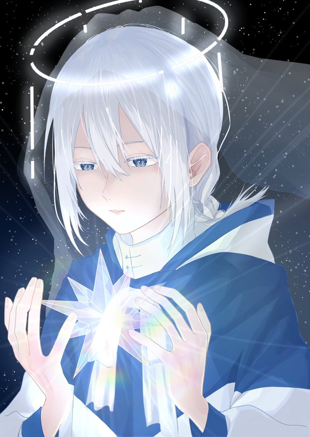

Illustration
創作キャラクターイラスト
青と白を基調に、透明感と幻想的な世界観を大切に制作した創作キャラクターイラストです。

Overview
オリジナルキャラクターを描いた創作イラストです。 青や白を基調に、透明感のある色味と静かな雰囲気が伝わるように制作しました。
キャラクターの表情や視線、光の入り方が印象に残るように意識し、幻想的で少し儚い世界観にまとめています。 夜空や結晶のようなモチーフを取り入れることで、冷たさの中にも柔らかさを感じられる雰囲気を目指しました。
Concept
「静けさ」「透明感」「幻想的な光」をテーマに制作したキャラクターイラストです。 キャラクターの持つ繊細な雰囲気が伝わるように、表情や髪の流れ、色の重なりを意識して描きました。
全体の印象が重くなりすぎないよう、青系の色味を中心にしながら、白や淡い光を加えてバランスを調整しています。 背景や装飾はキャラクターの雰囲気を引き立てる要素として配置し、イラスト全体に統一感が出るようにしました。
表現したいこと
キャラクターの静かな表情や、どこか物語を感じるような空気感を大切にしました。 見た人に「このキャラクターはどんな世界にいるのか」と想像してもらえるよう、色味や光、モチーフで雰囲気を作っています。
制作情報
- 制作期間：約5日（作業時間：約10〜15時間）
- 担当範囲：キャラクターイラスト制作 / 構図作成 / 配色調整 / 仕上げ
- 使用ソフト：CLIP STUDIO PAINT
- 制作形式：創作キャラクターイラスト
制作ポイント
キャラクターの雰囲気が伝わるように、表情・光・色味のバランスを意識しました。 特に顔まわりに視線が集まるよう、髪や装飾の描き込み、明暗の見せ方を調整しています。
また、夜空や結晶のようなモチーフを合わせることで、透明感のある世界観にまとめました。 青系の色味を中心にしながらも単調にならないよう、光の表現や細かな色の変化を加えて仕上げています。